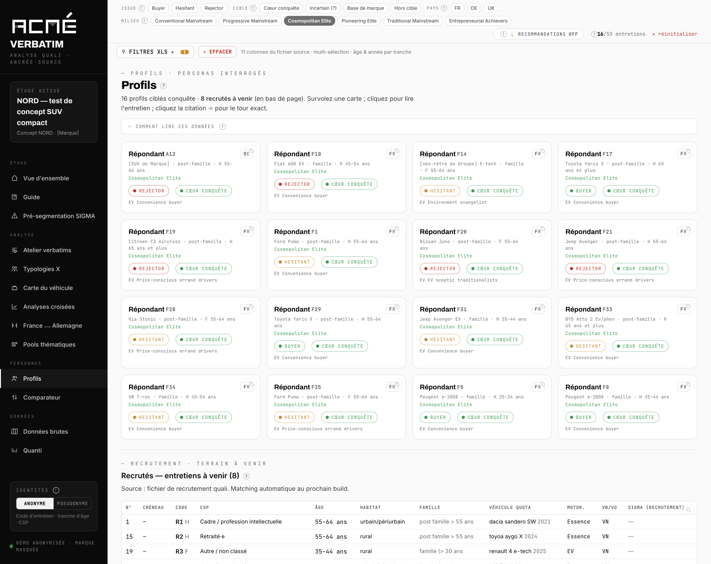
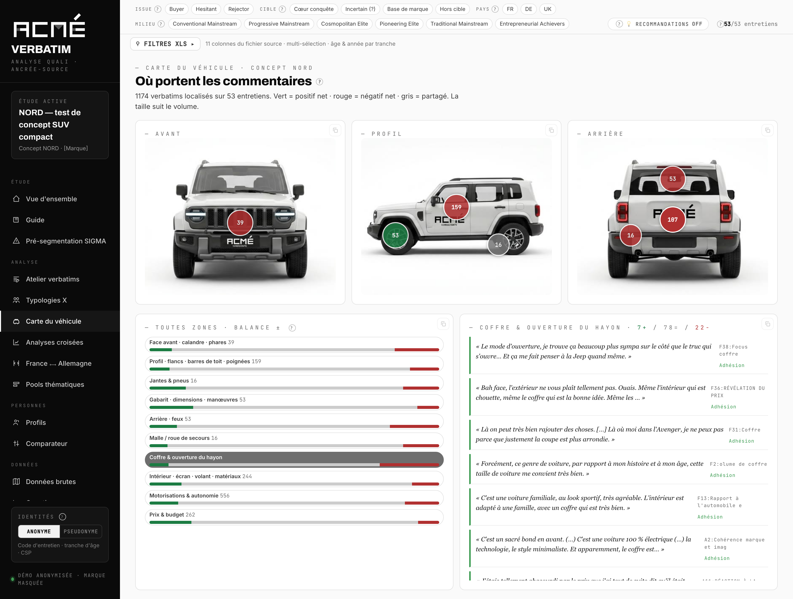
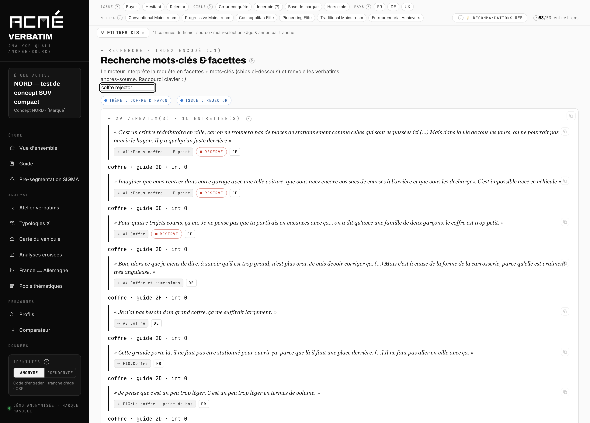
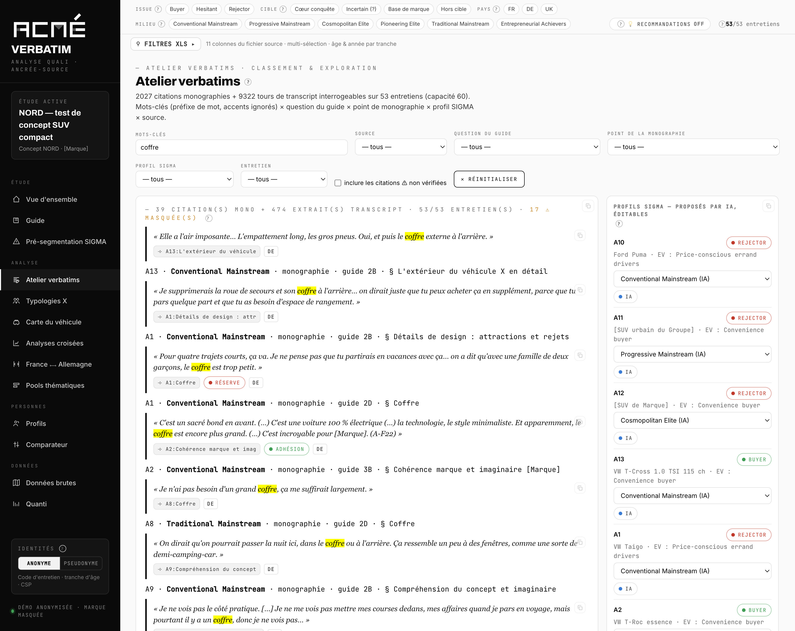
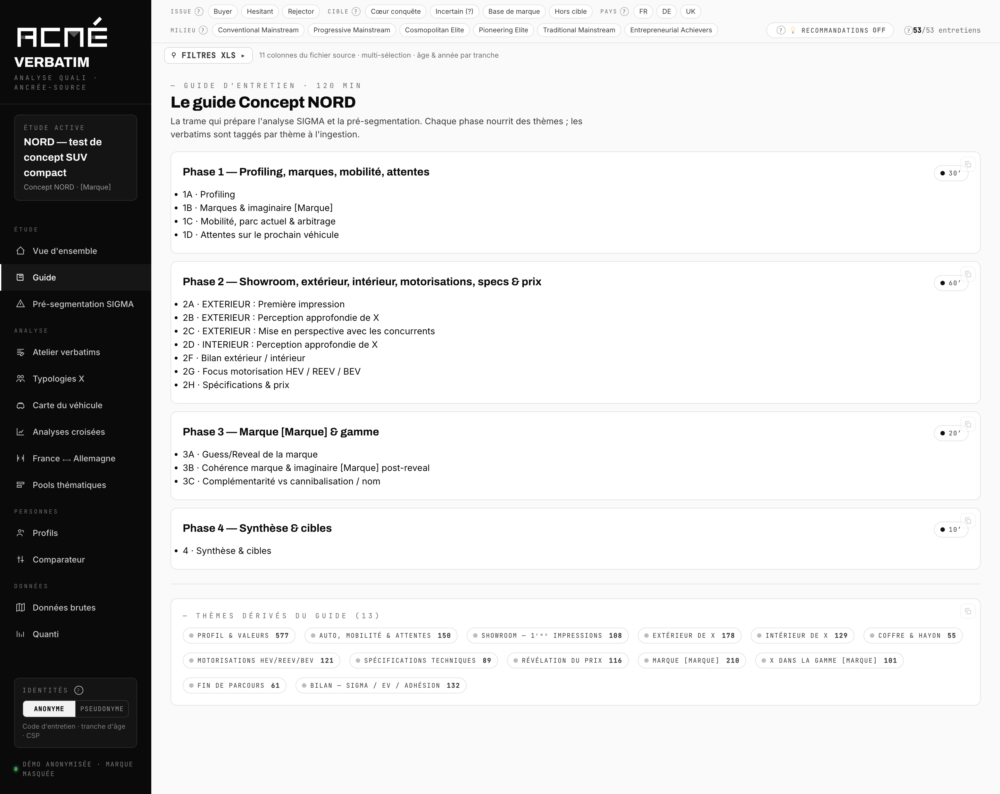
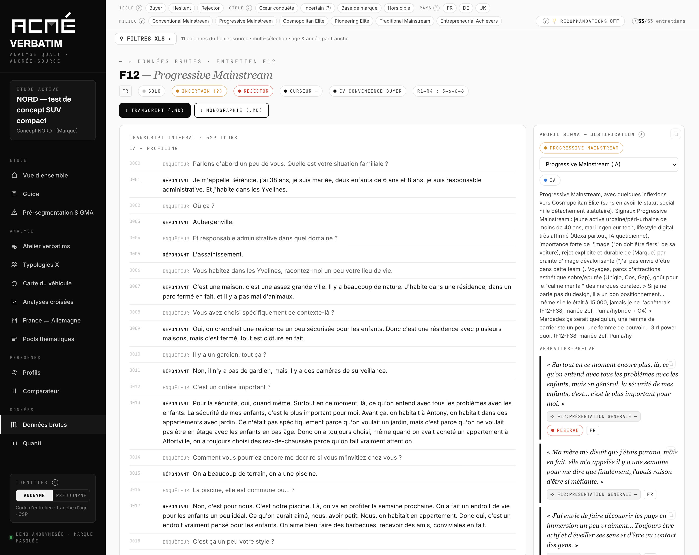
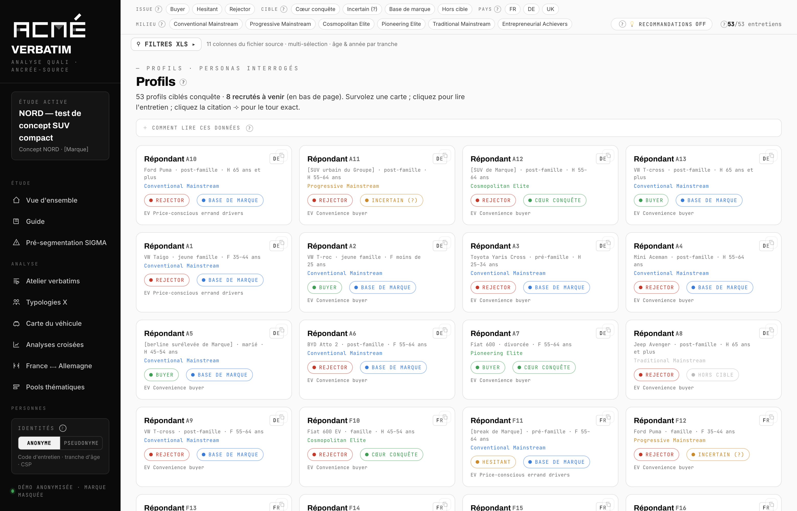
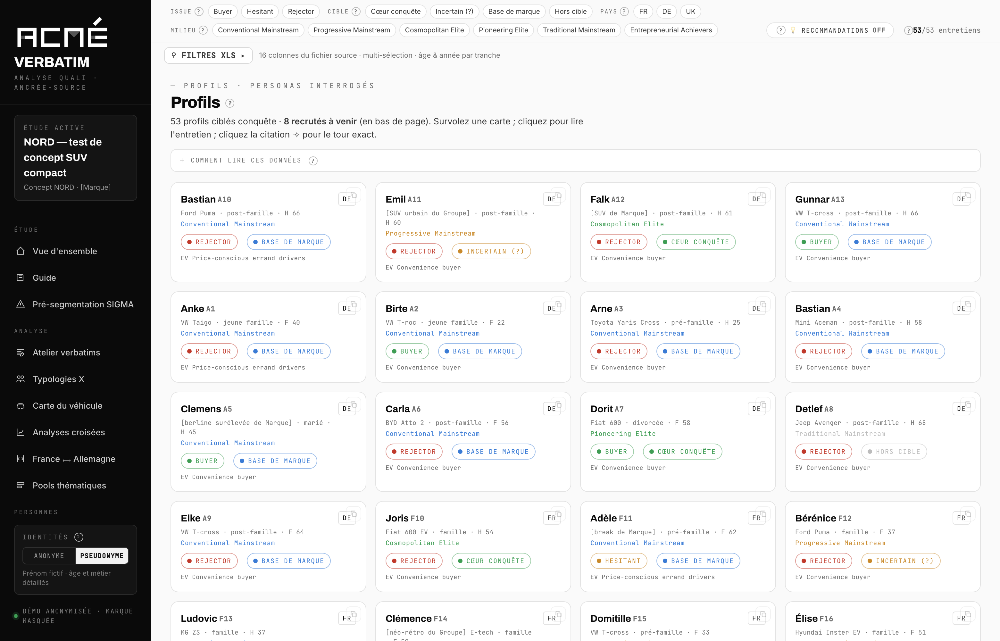

Traçabilité
Chaque affichage a une source
Un verbatim porte son identifiant d'entretien, sa position dans le guide et son horodatage. Ce qui ne remonte pas à une source ne s'affiche pas comme un verbatim.
Nous livrons le rapport, et avec lui le corpus qui le fonde — dans une application que vos équipes interrogent seules.
Les chiffres ci-dessous sont ceux de l'étude servant de démonstration : 53 entretiens individuels de deux heures, France et Allemagne.
Une étude qualitative coûte cher à produire et se consomme en une heure et demie de restitution. Ce n'est pas le rapport qui manque ensuite. C'est l'accès à ce qu'il y avait derrière.
Elles correspondent à trois moments : juste après le terrain, pendant les arbitrages, et le jour où quelqu'un conteste une conclusion.
La restitution s'adresse à tout le monde, donc à personne en particulier. Ici, chaque bénéficiaire de l'étude filtre le corpus sur son sujet et lit les retours qui le concernent.
Un designer obtient les 107 commentaires sur le hayon, filtrés sur la cible qui l'intéresse, en trois clics. Sans la plateforme, c'est une demande d'extraction et deux jours d'attente.

assets/shots/profils-persona.pngLe corpus filtré sur un seul milieu. Chaque carte porte l'issue, le statut de cible et une citation signature qui ouvre le tour de parole exact.

assets/shots/carte-vehicule-zone.pngChaque commentaire est rattaché à la zone qu'il vise. Taille de la pastille : volume. Couleur : polarité nette. Le clic ouvre les verbatims sources.
Une attente coupée de son contexte devient vite un cahier des charges erroné. « Il faut un grand coffre » ne veut pas dire la même chose chez un couple post-famille en zone rurale et chez un urbain qui se gare en épi.
Une recommandation arrive avec ses preuves attachées, pas avec une citation choisie. C'est la différence entre un arbitrage qui tient en comité et un arbitrage qui se rediscute.

assets/shots/recherche.pngLe moteur traduit la requête en facettes et en mots-clés. Tout se combine en ET, et les filtres du haut s'appliquent aussi.

assets/shots/atelier.pngLe croisement mot-clé × question du guide × point de monographie × profil. Chaque bloc se copie tel quel.
Le jour où une conclusion est contestée, la seule réponse solide est la source. Elle est là, entière, et elle n'a pas été résumée en chemin.
Le corpus resservira. Une question qui n'était pas dans le brief initial se teste sur le terrain déjà payé, avant d'en financer un nouveau.

assets/shots/guide.pngLa trame réelle du terrain, séquence par séquence, reliée aux réponses qu'elle a produites.

assets/shots/entretien.pngL'entretien complet, avec ses phases et ses codages. La source, jamais résumée.
Le rapport parle à la direction. Le corpus, lui, sert à chacun — à condition qu'il soit interrogeable.
Une transcription contient un prénom, un métier, une situation familiale, parfois une opinion ou un état de santé. C'est un traitement de données personnelles, et la règle appliquée au corpus doit être écrite quelque part. Ici, elle est dans l'application, et elle se change d'un clic.

assets/shots/identite-anonyme.png
assets/shots/identite-pseudonyme.pngLa règle, écrite. Le prénom réel ne figure nulle part dans le fichier livré — il n'est pas masqué à l'affichage, il est absent. La table de correspondance reste chez nous, hors du livrable. Les marques citées dans un test concurrentiel peuvent être masquées de la même façon, y compris à l'intérieur des transcriptions.
Ce que nous ne promettons pas : qu'un corpus pseudonymisé soit anonyme. Il ne l'est pas. Croiser un métier détaillé, un âge exact et une zone d'habitation peut suffire à reconnaître quelqu'un. C'est pour cette raison que le mode anonyme généralise ces trois attributs, et qu'il est le réglage par défaut à la livraison.
La plateforme range et retrouve. Elle ne décide pas. L'interprétation, l'analyse et la recommandation restent le travail de nos consultants seniors — c'est ce que vous achetez, et ce n'est pas délégable à une machine.
Un verbatim porte son identifiant d'entretien, sa position dans le guide et son horodatage. Ce qui ne remonte pas à une source ne s'affiche pas comme un verbatim.
Le milieu proposé par l'analyse automatique s'édite dans l'application, et le recalcul se propage à toutes les vues. La proposition de la machine n'est jamais figée.
Le livrable est un fichier unique qui fonctionne hors connexion. Aucun appel réseau, aucun compte, aucun corpus client versé dans un modèle public.
Les citations non retrouvées mot à mot sont marquées comme reformulées. Les entretiens à faible appariement sont listés. Une donnée absente reste absente, elle n'est pas comblée.
Où ça se place dans la mission. La plateforme se construit à l'étape d'analyse, à partir des mêmes sources que le rapport. Elle est livrée avec lui, à l'étape de décision. Elle ne remplace ni la restitution ni le rapport : elle prend le relais après, quand les questions arrivent une par une.
Sur une étude ad-hoc de cette taille, il n'y a pas de terrain supplémentaire à financer — le surcoût porte sur la structuration du corpus et le codage, et se chiffre au cadrage.
Nous pouvons partir d'un terrain déjà réalisé pour en faire la démonstration sur vos propres données. Comptez une semaine.